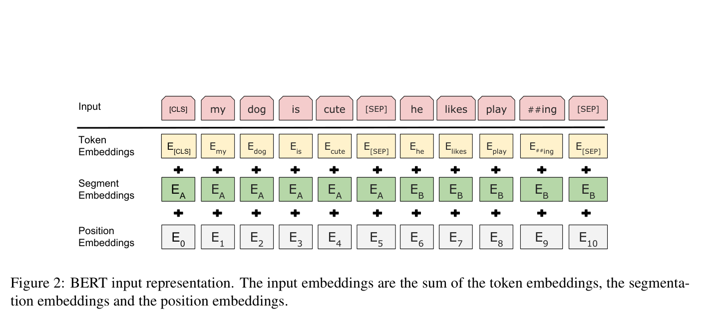
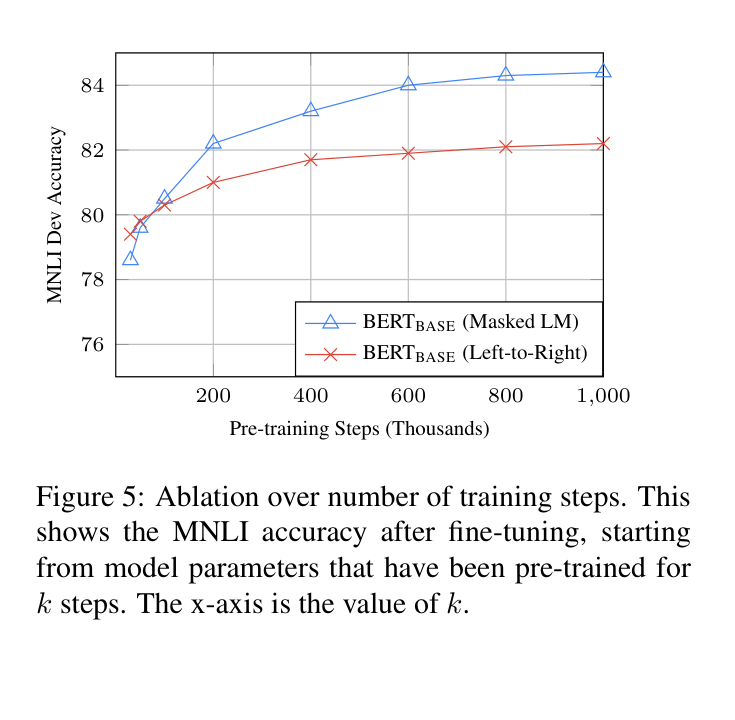

Bidirectional language-model pretraining
To read both ways, first hide the answer.
BERT made a Transformer encoder into a general-purpose reader by turning ordinary text into repair jobs. Cover a few words, let the encoder use the remaining words on both sides, and train it to restore what was concealed.
01 / The motivating constraint
Why not let a model read the whole sentence?
Consider “The fisherman stood on the river bank.” A left-to-right language model reaches bank before it has seen river; it cannot use that decisive clue. For sentence interpretation or answer extraction, this one-way restriction is inconvenient.
Let every token see itself
Then a model predicting bank can simply copy the word already in its input. The training game becomes trivial, not useful.
Hide the token first
Now the model must infer the original word from its neighbours. It may use clues on both sides without being able to peek at the answer.
Predict before reveal
If the true target token is still visible to a bidirectional encoder, what shortcut can it use?
It can copy the visible target. Masking removes that leakage, so both left and right context can become useful evidence.
02 / The input before attention
Each position arrives with three coordinates.
BERT receives a packed token sequence such as [CLS] question [SEP] passage [SEP]. At each position i, it sums three vectors—one for the token identity, one for its position, and one for whether it belongs to sentence A or B. It does not concatenate these three vectors.

Bridge from the neural language model lesson: a fixed-window model looks up a few previous word vectors. BERT still begins with lookup vectors, but its encoder lets every supplied position exchange information through multiple layers, rather than preserving a fixed context window.
03 / The central mechanism
Repair the original word, not the corrupted one.
[MASK] instead.The paper selects 15% of WordPiece tokens as prediction targets. For a selected token, 80% are replaced with [MASK], 10% with a random token, and 10% are left unchanged. The latter two cases reduce reliance on a marker that does not appear during ordinary fine-tuning; they reduce the mismatch, not erase it.
Worked trace A: one masked token
Original sentence: “The doctor prescribed a medicine for the infection.” Suppose the selected token becomes [MASK]. After using both sides, BERT gives medicine probability 0.60. Its loss is −log(0.60) ≈ 0.511. If it assigned probability 0.10 instead, the loss would be −log(0.10) ≈ 2.303: a much stronger correction signal.
The sum covers only selected positions M. The model reads the corrupted sequence x̃ but is penalized for failing to recover the original xi.
04 / Instrument
Change a right-side clue.
Before using the control, predict: which candidate should become more plausible for “The fisherman stood on the river [MASK]” if the right-side clue changes from river to money?
Right-side clue
bank is the leading repair because “river bank” is a common contextual fit. The model’s hidden state at the blank uses this right-side clue as well as the left side.
Illustrative ranking: bank 0.72 · shore 0.16 · loan 0.01
Predict before reveal
Fine-tuning text normally contains no [MASK]. If pretraining used only literal masks, what would change?
The encoder could over-rely on an absent token. The paper’s 80/10/10 corruption mixture partially addresses this pretrain-to-fine-tune mismatch.
05 / Transfer
Keep the reader; change the question.
Pretraining does not make BERT a finished question-answering system. It gives downstream tasks an informed starting encoder. A task adds a small output head and fine-tunes all parameters, not merely the head.

Worked trace B: extract an answer span
Question: “Where did Ada work?” Context: “Ada worked at Bell Labs.” BERT outputs a state Ti for every token. A start vector gives P(start = Bell) = 0.70; an end vector gives P(end = Labs) = 0.80. The span loss is −log(0.70) − log(0.80) ≈ 0.580. This task needs token-level states, not only the [CLS] state.
Predict before reveal
Can a classifier reading only C = T[CLS] identify the exact start and end of a passage answer?
No. The paper scores each contextual token state with start and end vectors. [CLS] is used for sentence-level classification, not the ordinary span head.
06 / The paper’s second objective
NSP was part of the 2019 recipe, not a permanent law.
During pretraining, the paper also uses next sentence prediction (NSP): half the input pairs are true consecutive segments and half combine a segment with a random segment. A classifier on [CLS] predicts whether B follows A. This was intended to make text-pair representations useful.
07 / Evidence
Separate the paper’s controlled result from a universal claim.
The most useful controlled comparison holds the BERTBASE architecture, training data, fine-tuning scheme, and hyperparameters fixed while changing pretraining objectives. Its rows answer a narrower question: what did this original recipe support on these development tasks?
| Pretraining variant | MNLI-m | QNLI | MRPC | SST-2 | SQuAD |
|---|---|---|---|---|---|
| BERTBASE | 84.4 | 88.4 | 86.7 | 92.7 | 88.5 |
| No NSP | 83.9 | 84.9 | 86.5 | 92.6 | 87.9 |
| LTR & No NSP | 82.1 | 84.3 | 77.5 | 92.1 | 77.8 |
| LTR & No NSP + BiLSTM | 82.1 | 84.1 | 75.7 | 91.6 | 84.9 |
Read it carefully: removing NSP lowered several scores in this configuration, particularly QNLI (88.4 → 84.9). Replacing masked bidirectional pretraining with a left-to-right objective lowered every shown result, especially SQuAD (88.5 → 77.8). This is evidence about the original BERT recipe, not proof of timeless necessity.

08 / Limits and recall
Know exactly what the repair game does not promise.
“BERT reads both directions, so it directly generates text left-to-right.”
No. It can use a future token only when that future token is already supplied in its input. Autoregressive generation must decide the next token before its future exists.
“15% of tokens become literal [MASK] tokens.”
No. The paper selects 15% as targets; among them, 80% become [MASK], 10% become random tokens, and 10% remain unchanged.
“The [CLS] vector is a magical universal summary.”
It is a learned first-position state. It becomes useful for a particular task because a task loss trains a classification head and fine-tunes the encoder.
“The benchmark improvements prove broad understanding or fair deployment.”
No. They report specific benchmark metrics under the paper’s conditions. They do not establish robustness, factual reliability, causal reasoning, or behavior across people, dialects, and deployment contexts.
Active recall
Where does an MLM label come from?
From the original token before corruption; the label is already present in ordinary text.
Why can BERT use both left and right context without copying the answer?
The selected original token is hidden, randomized, or sometimes left unchanged, while the loss asks for the original identity.
What is transferred to a downstream task?
The pretrained encoder parameters initialize a task model. The paper adds a small head and fine-tunes all parameters.
What is the narrow claim supported by Table 5?
In the original controlled BERT setup, masked bidirectional pretraining and NSP helped the listed development-task scores; it is not a general proof that NSP is required.
Connect it to your mental map
Reuse the Transformer; change where the teaching signal comes from.
Attention Is All You Need supplies the encoder self-attention machinery. BERT supplies a way to pretrain that encoder from raw text: hide a token and recover it. The neural probabilistic language model provides the earlier fixed-context story; BERT replaces its narrow window with deep context-dependent states. SimCLR shares the self-supervised pattern: alter an unlabeled input, then learn from what that alteration preserves or conceals. DPO comes later in an LM lifecycle: it changes behavior using preference pairs rather than building general contextual representations from text.
Takeaway